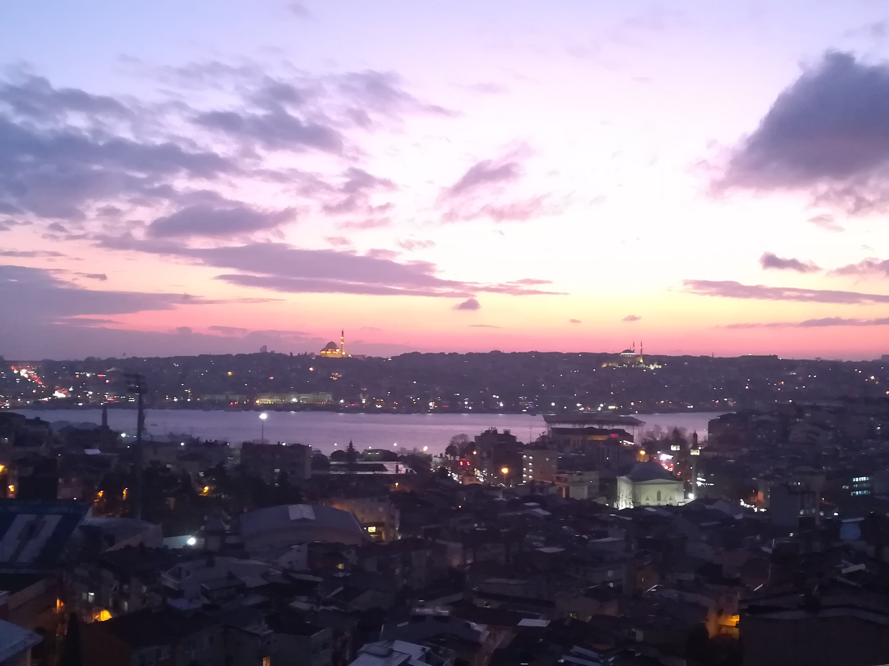
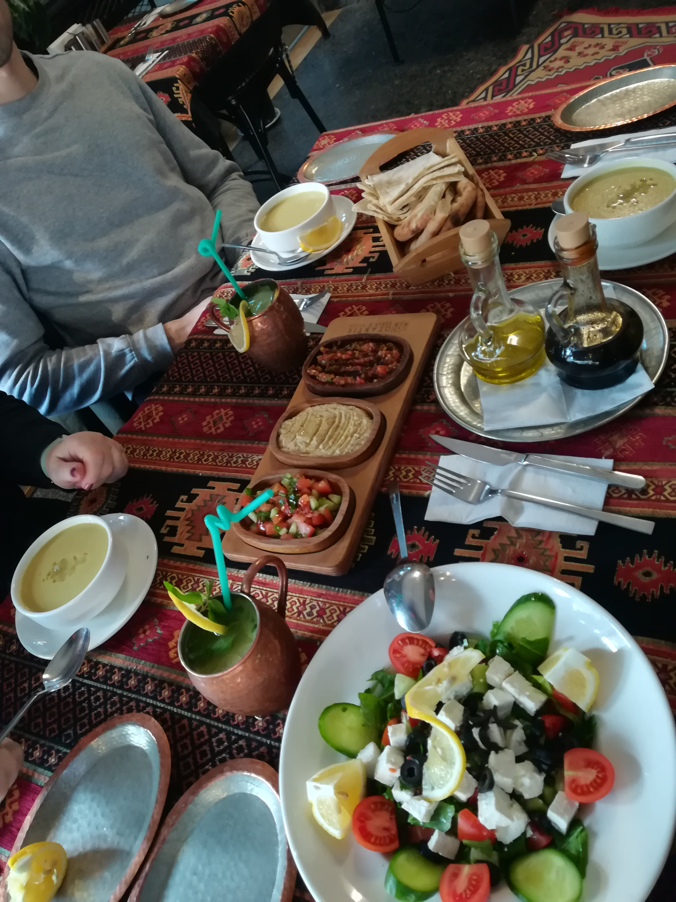
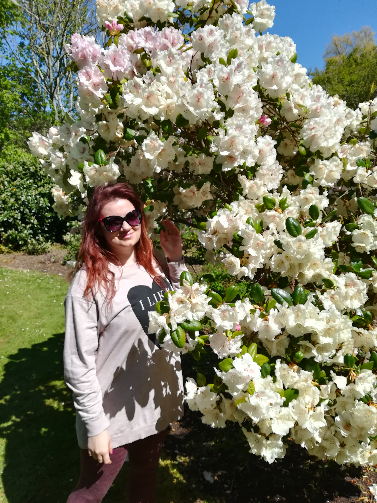
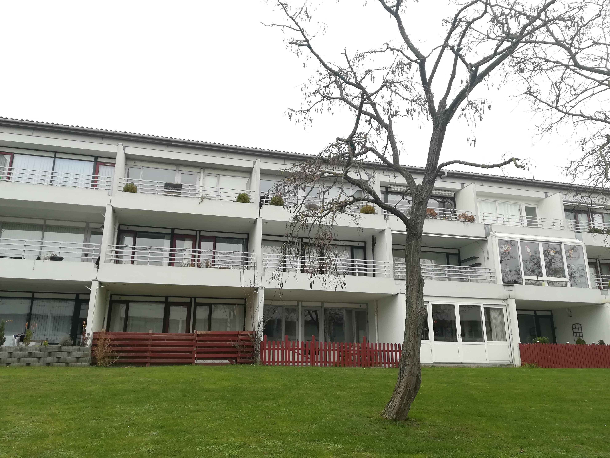

Hi Dear pen-pal,
I really sorry of late and typed letter. I will tell about my all year. Its fly so fast. On January I satisficed myself in Vilnius. Massage salons in old-town, traditional Lithuanian food. I met my friends and stayed on apartments in old town, took lots of walks, visited some museums. One of them was a prison and arrest house. Which I liked to visit, they are now closed, so you can visit them.
On January and February I with Arturas, my mom and my friend Laurynas were in Istanbul for more than 2 weeks, we lived close near Istiklal street. I founded so nice and big apartments here by Airbnb. Every day we tried new restaurant for eating. Turkish food is wonderful.
Lots of places visited and lots km walked by foot.

If you a curiuos to know more about Istanbul, just ask, I will tell more. We thinking to come back to Istanbul as soon as possible. So, march 16 Lithuanian locked down. I couldn’t fly to Copenhagen, my SAS flight was canceled 2 times, I got back my all money. Then I founded my colleague with a car and we drive to Denmark, by ferries, through Sweden only on 20 April. That was so sad to not see Arturas so long time. He was drive to Denmark alone on February. I stayed in Vilnius, cos I must do some health tests, I visited book fairy, which I love, and spend some times at home in forest and stayed in old-town. Well I worked in Denmark until September. We spend our little free time in Copenhagen, near see, with friends. Visited some nice harbors, and went to restaurants.
In September I come back to Lære Dansk school. Now I am in 3.3. modul. On January I will have exam. The school is finishing when passes 3.5. modul, so I think I will learn 1 year more. Its getting hard to write in English for me and talk, because first omming Danish language to me :) On 1 st of December we moved to our new apartment, which we bought with Arturas in Næstved.
The sad thing, that we could back to Vilnius, and all Christmas we will spend alone. That will be the first Christmas when I am not at home. It’s makes me depressed. We waiting of vaccine as soon as possible, I want to come back to Vilnius to visit my all relatives and friends. And I need to come back to my travels, it’s so boring life without them. At the moment I learning Danish all my time. I could correspondence only in virtual version. If you want to write me back you can do it many ways. My new address is: Gerda Pakalkaite Bogensevej 17, ST. Lejl. 266 Næstved 4700 Denmark You can still use address: Gerda Pakalkaite Kryžiokų str. 75 Vilnius 14270 Lithuania Or welcome to write a letter to e-mail: gerdiep@yahoo.com Hope to hear from you, Have a wonderful Christmas time, And a very happy healthy New Year!
Your sincerely, Gerda